=======
Tutorial¶
This documenent complements the technical documentation of the hippocampal shape and thickness analysis scripts by providing a more explanative description of this software. It covers the following topics:
Input images¶
The hippocampal shape and thickness analysis package currently support input images that are created by FreeSurfer’s hippocampal subfield toolbox or the ASHS software. Specifically, the following segmentation images can be used:
FreeSurfer’s hippocampal subfield segmentation from FreeSurfer 7.11 or later.
Utrecht Medical Center 7T MRI Atlas
Penn ABC-3T ASHS Atlas for T2-weighted MRI
Segmentation images resulting from one of these atlases can be used as inputs for the hippocampal shape and thickness analysis algorithm. For optimal segmentation accuracy, we recommend that these segmentations be created from high-resolution T2 images of the hippocampal / medial temporal lobe region.
Processing steps¶
The hippocampal shape and thickness analysis pipeline consists of a sequence of several processing steps. Each step consists of one or more sub-steps, some of which can be optional. Each step produces one or more output files and/or directories, which can be useful for quality control or troubleshooting.
1. Image processing¶
The first step converts the input to FreeSurfer’s mgz format. By default, the
image is also cropped to the hippocampal region to speed up processing (but this
can be switched off using the --no-crop flag).
If the --upsample argument is used, the image will be sampled to a higher
resolution to allow for more fine-grained image and surface processing
operations. Using this option is recommended for images with anisotropic voxels
or if the voxel edge length is substantially larger than 0.33 mm. If enabled,
upsampling will be done to the minimal voxel edge length by default; an
alternative size can be specified using the --upsample-size argument.
The result of processing step 1 (‘process image’) will be the <lh|rh>.image.mgz
image in the main folder and the image subdirectory with intermediate results.
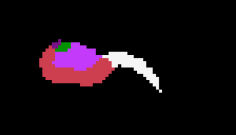
2. Label processing¶
The second step extracts the relevant subfield labels from the segmentation
image and merges them into a new, reduced segmentation image. If a separate
label is present for the molecular layer, it will be merged with the adjacent
CA and subiculum subfields (unless switched off using the --no-merge-molecular-layer
flag`).
If no specific labels for the hippocampal head and/or tail are present in the
segmentation, the boundaries between the hippocampal body and the head or tail
need to be detected heuristically with the automask-head and/or automask-tail
arguments. More conservative boundaries (i.e. more cropping) are created by the
--automask-head-margin and --automask-tail-margin arguments, which can be
used to add an extra margin (in terms of voxels along the longitudinal axis).
The result of processing step 2 (‘process mask’) will be the <lh|rh>.label.mgz
image in the main folder and the label subdirectory with intermediate results.
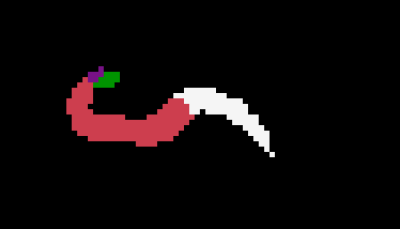
3. Mask processing¶
The third step creates a binary mask from the reduced segmentation image. By
default, some gaussian filtering will be applied to the binary mask to reduce
sharp edges; this can be switched off using the --no_gauss_filter flag. The
filter width and threshold can be adjusted using the --gauss_filter_size
argument.
Alternatively or in addition to the gaussian filter, a filter that operates
exclusively along the longitudinal axis can be used. This can further reduce the
sharp edges in this dimension due to anisoptropic voxels. This filter can
switched on with the --long_filter flag, and can be modified using the --long_filter_size
argument.
Finally, a binary dilation / erosion procedure is applied to the mask to close
small holes in the segmentation. This can be switched off using the --no-close-mask
flag.
The result of processing step 3 (‘process mask’) will be the <lh|rh>.mask.mgz
image in the main folder and the mask subdirectory with intermediate results.
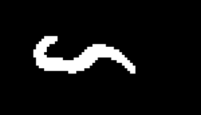
4. Surface creation¶
The fourth step converts the binary mask image into a vertex-based surface
representation. By default, FreeSurfer’s marching cube algorithm is used. If it
does not give good results, it can be changed to the scikit-image algorithm
using the --mca argument. Optionally, a remeshing procedure can be applied to
the the surface mesh if the vertices are spaced very irregularly; this may not
always be the case, therefore this step has to be switched on using the --remesh
flag if desired. In any case, the initial surface will be smoothed, the amount
of which can be controlled using the --smooth argument. During this stage,
several QC plots will be created and placed in the qc subdirectory.
The result of processing step 4 (‘create surface’) will be the <lh|rh>.surf.vtk
surface in the main folder and the surface subdirectory with intermediate
results. The following images show surf.vtk overlaid onto mask.mgz and in a
3D view.
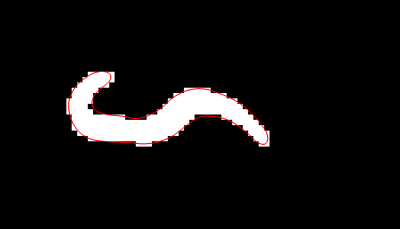 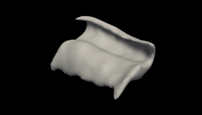
5. Creation of a tetrahedral mesh¶
The fifth step fills the interior of the surface mesh with vertices and edges, i.e. creates a tetrahedral mesh from the triangular surface mesh.
There are no processing options for this step.
The result of processing step 5 (‘create tetrahedral mesh’) will be the <lh|rh>.tetra.vtk
mesh in the main folder and the tetra-mesh subdirectory with intermediate
results.
6. Creation of label files for the tetra mesh¶
The sixth step will create boundary label files that are used for the next processing step, the cutting of the tetrahedral mesh.
There are no processing options for this step.
The intermediate results of processing step 6 (‘create label files for tetra
mesh’) are stored in the tetra-labels subdirectory.
7. Cutting of the tetra mesh at anterior and posterior ends¶
This step cuts open the tetrahedral mesh at its anterior and posterior ends. It
also checks whether or not this cutting has been successful, i.e. if there are
exactly two boundary loops. If this is not the case, the analysis will be
terminated at this stage. The range for tetrahedral boundary cutting can be
modified by the --cut-range argument. The default values are -0.975, 0.975.
The result of processing step 7 (‘cut open tetrahedral mesh’) will be the <lh|rh>.cut.vtk
mesh in the main folder and the tetra-cut subdirectory with intermediate
results. The following images show rm.open.bnd.cut.vtk in conjunction with rm.bnd.cut.vtk.
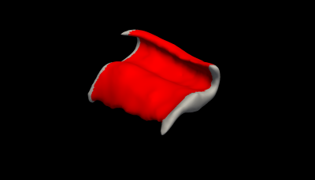 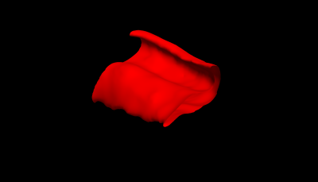
8. Cube parametrization¶
This step computes a ‘cube parametrization’ on the tetrahedral mesh: it creates
smooth functions in three anatomically meaningful dimensions across the mesh
that will form the basis of the 3D coordinate system. Parameters for the cube
parametrization, in particular the identification of the lateral and medial
boundaries, can optionally be set using the --aniso-alpha and --aniso-smooth
arguments. In addition, QC plots will be created and stored in the qc
subfolder.
The intermediate results of processing step 8 (‘create cube parametrization’)
are stored in the tetra-cube subdirectory.
9. Thickness and curvature computation¶
This processing steps conducts the computation of thickness and curvature
values across the hippocampal mesh. In addition, QC plots will be created and
stored in the qc subfolder.
The optional --thickness-grid argument can be used to modify the extent and
resolution of the grid used for thickness computation. See below
for an explanation.
The primary output of the hippocampal shape and thickness analysis are surface
files and associated thickness values in the thickness folder. The estimated
hippocampal thickness values will be stored in csv tables. See the section on
evaluating the output for a detailed description.
The thickness values will also be stored as mgh and psol overlay files that
can be overlaid onto the mid-surface vtk file. Similar files are also created
for the projected subfield boundaries.
The following images show mid-surface.vtk as a surface and with additional
triangulation overlay, and overlays of mid-surface.thickness.mgh and mid-surface.hsf.mgh
onto mid-surface.vtk.
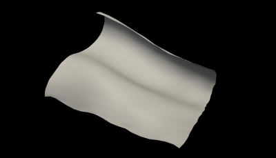 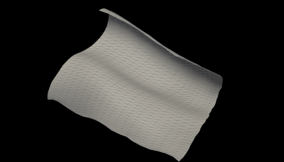
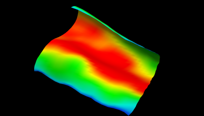 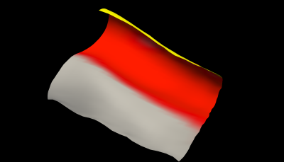
Besides the thickness values, mean and gaussian curvature estimates are
provided for interior, mid, and exterior surfaces. Below are overlays of mid-surface.mean-curv.mgh
and mid-surface.gauss-curv.mgh onto mid-surface.vtk.
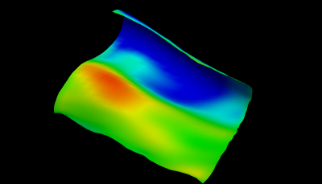 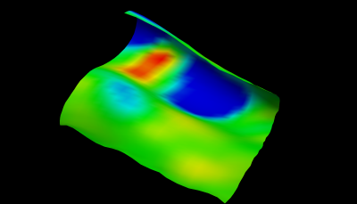
10. Mapping of subfield labels (and other volume-based data, optional)¶
The results of processing step 10 will be stored in already existing subdirectories and are explained as part of processing step 9 (‘thickness and curvature computation’).
11. Creation supplementary files for visualization¶
The results of processing step 11 will be stored in already existing subdirectories and are explained as part of processing step 9 (‘thickness and curvature computation’).
Running an analysis¶
Mandatory arguments¶
An analysis is conduced by calling the run_hipsta command. Each analysis
requires the following arguments:
--filename: Filename of a segmentation file--hemi: Hemisphere. Either ‘lh’ (left) or ‘rh’ (right)--lutLook-up table (‘atlas’). Can be ‘freesurfer’ or ‘ashs-penn_abc_3t_t2’ or ‘ashs-umcutrecht_7t’. Alternatively, a text file with numeric and verbal segmentation labels can be used.--outputdir: Output directory where the results will be written.
A minimal command could therefore look like this (for an analysis of the left hemisphere in a FreeSurfer segmentation):
run_hipsta --filename /path/to/my/segmentation/image --hemi lh --lut freesurfer --outputdir /path/to/my/output/directory
Additional arguments for ASHS segmentations¶
Segmentation images that are produced by the ASHS require a set of additional processing directives in addition to the minimal set of arguments shown above.
It is recommend to use the --upsample flag for upsampling the images to the
smallest voxel edge length. This can be refined more using the --upsample-size
argument.
Since no explicit labels for the hippocampal head are present in ASHS
segmentations, it will be necessary to use the --automask-head flag and
optionally also the --automask-tail-margin argument. If the identification of
the boundary between hippocampal body tail does not work well given the existing
labels, using the --automask-tail flag and optionally the --automask-head-margin
argument may be advised as well.
Additional arguments for ASHS and FreeSurfer segmentations¶
The default grid that is imposed on the hippocampal mid-surface results from a 3D coordinate system that has a resolution of 41 units along the medial–>lateral axis, 21 units along the posterior–>anterior axis, and 11 units along the outer–>inner axis.
This resolution - and also the space covered by the coordinate system - can be
changed using the --thickness-grid argument, which determines the extent and
resolution of the grid used for hippocampal thickness computation, and is
defined by three lists of three numbers: negative extent of x axis, positive
extent of x axis, resolution on x axis. Repeat for the y and z axes. The default
values are -0.9 0.9 41, -0.975 0.975 21, and -0.9 0.9 11.
Evaluating the output¶
The primary output of the hippocampal shape and thickness analysis are surface
files and associated thickness values in the thickness folder. The estimated
hippocampal thickness values will be stored in csv tables:
Filenane |
Contents |
|---|---|
|
Length estimates in the medial-to-lateral dimension |
|
Length estimates in the medial-to-lateral dimension |
|
Thickness estimates in the exterior-to-interior dimension |
Here, x corresponds to the medial–>lateral dimension, y to the posterior–>anterior dimension, and z to the exterior–>interior dimension. The thickness values are therefore in the z files, whereas the x and y files contain length estimates for the other two directions.
The thickness values will also be stored as mgh and psol overlay files that can be overlaid onto the mid-surface vtk file. It is also possible to overlay the projected subfield boundary files onto the midsurface:
Filenane |
Contents |
|---|---|
|
Hippocampal mid-surface for the <left|right> hemisphere |
|
Hippocampal thickness overlay |
|
Hippocampl subfield overlay |
We recommend to use FreeSurfer’s Freeview program for visualization. This is an
example for the left hemisphere; it may be necessary to adjust the specific
settings using Freeview’s configure button in the oOverlays panel.
freeview -f thickness/lh.mid-surface.vtk:overlay=thickness/lh.mid-surface.thickness.mgh`
Besides the thickness values, mean and gaussian curvature estimates are provided for interior, mid, and exterior surfaces:
Filenane |
Contents |
|---|---|
|
Interior, mid, and exterior surface |
|
Tables of mean and gaussian curvature estimtes for corresponding surfaces |
|
Overlays of mean and gaussian curvature estimtes for corresponding surfaces |
Troubleshooting¶
Logfiles¶
In case of an error, the logfile (logfile.txt in the main directory) may be
useful for identifying the cause of the error. The logfile will contain
information about the program version, command line options, and any steps that
were completed successfully. If an analysis ran through successfully, it will
contain the line Hipsta finished without errors. In the case of an error, it
will output Hipsta finished WITH ERRORS together with some additional
diagnostic information.
QC¶
Automated QC¶
A set images of the mesh and the extracted surfaces will be stored in the qc
folder. These can be used for a quick check if the analysis returned plausible
results.
Manual QC¶
Additional QC can be done using by inspecting (overlays of) images and surfaces in FreeSurfer’s Freeview program. Here’s an example for the left hemisphere, all paths are relative to the main output folder:
freeview -v lh.image.mgz -v lh.mask.mgz -f lh.surf.vtk -f thickness/lh.mid-surface.vtk
The <lh|rh>.tetra.vtk and <lh|rh>.cut.vtk files represent tetrahedral meshes
and cannot be loaded in Freeview. However, triangular boundary meshes exist in
the following subfolders: <lh|rh>.rm.bnd.tetra.vtk.vtk in tetra-labels, and
<lh|rh>.rm.open.bnd.cut.vtk in tetra-cut. Shown below are overlays of
segmentation, mask, surface, and mid-surface.
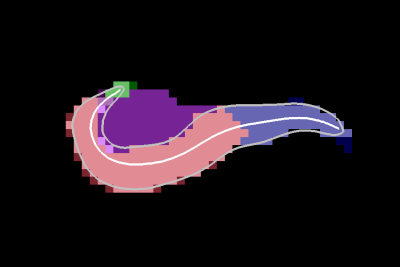 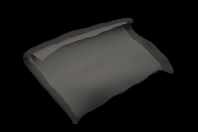
Common issues¶
Two types of issues are frequently observed: the presence of holes in the surface after processing step 4 and cutting issues after step 7. The program checks for the presence of these issues and will terminate if it detects them. We outline two strategies to mitigate these issues below.
Holes in the surface¶
Holes in the surfaces can be the result of less than optimal image
preprocessing. We recommend to try adjusting the width and threshold for the
gaussian filter using the --gauss-filter-size argument, and optionally to
employ additional smoothing along the longitudinal axis using the --long-filter
flag (which can be fine-tuned using the --long-filter-size argument). It may
also help to change the surface extraction algorithm using the --mca argument.
The following images show holes in the surface and artificial connection between
anatomically unconnected regions.
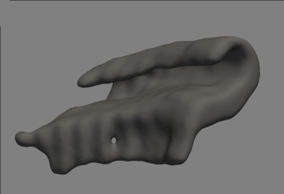 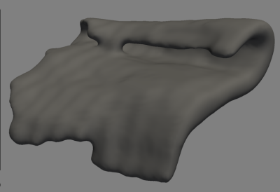
It will return an error message as follows:
[INFO: check_surface.py] Euler number for <...>/rh.surf.vtk is 0
[INFO: check_surface.py] Surface contains holes. Please edit the corresponding hippocampal segmentation and re-run.
[INFO: hipsta.py] Hipsta finished WITH ERRORS.
<...>
AssertionError: Check surface failed (stage: surface)
Cutting issues¶
Another issue may arise with cutting the tetrahedral mesh: this can be due to a failure of the automated heuristics for head or tail detection. Or it can simply be due to unclean cutting at either end of the hippocampal body so that there are more than two boundary loops in total. The following images show failures of automated head detection and more than two boundary loops.
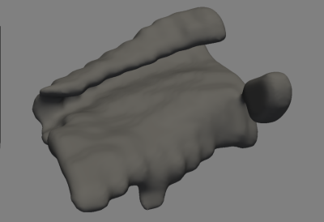 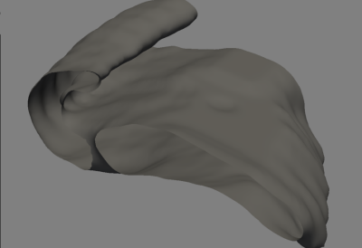
It will return an error message as follows:
[INFO: check_surface.py] There are 3 boundary loops for <...>/tetra-cut/rh.rm.open.bnd.cut.vtk
[INFO: check_surface.py] Surface contains does not contain 2 boundary loops. Please retry with different cutting parameters.
[INFO: hipsta.py] Hipsta finished WITH ERRORS.
<...>
AssertionError: Check surface failed (stage: boundaries)
If hipsta is run using the --automask-head or --automask-tail arguments,
this issue can potentially be solved with more conservative margins for the head
or tail boundaries, which can be set using the --automask-head-margin and
--automask-tail-margin arguments. By default they are set to zero, and one
could try to gradually increase them.
Another potential solution is to choose lower values for the --cut-range
argument; the defaults are set to -0.975, 0.975, and better cutting results
may be obtained with lower absolute values.